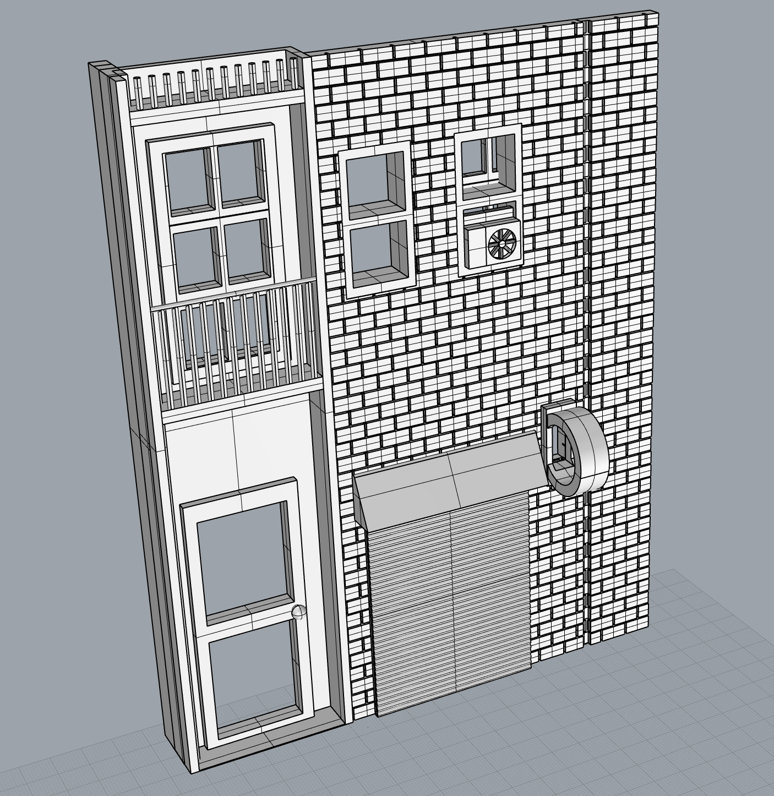
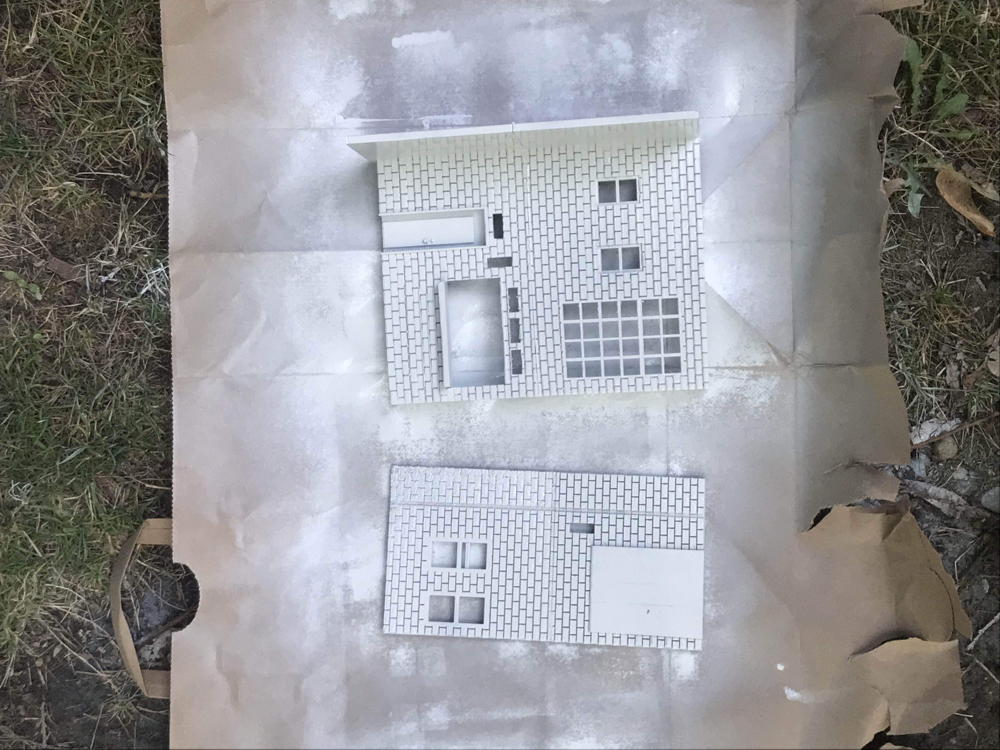

Assignment 8: Final Project
For my final project I designed, 3D-printed, and constructed a "booknook"—a bookend shelf insert with a miniature city alleyway built inside.
Inspiration & Brainstorming
My inspiration for this project comes from the subreddit r/booknooks and looking up pictures of alleyways on Unsplash. I also created this moodboard on Pinterest with pictures of booknooks and alleyways with the vibe I was interested in producing for my own booknook

To kick off the project, I started by sketching a layout with a few ideas for interior elements out exterior design.
Prototyping
Since the prints required for my design were fairly detailed and thus would be painful to reprint should things go awry, I started by prototyping and testing smaller elements of the design. I was able to test out some ideas and make decisions before starting the process of printing pieces.
Structure
I put together this cardboard version of my booknook so I could prototype the dimensions and structure I wanted to use.
Sliding Track
I wanted to have a removable exterior cover for the booknook that would hide interior wiring and could be reversed to enclose the booknook for transportation. I designed a sliding track that slid smoothly as a prototype.
This is a situation where I should have done more testing of the prototype before printing the large pieces. I realized after I painted the main pieces that the extra bulk and texture of the paint made the tracks not work smoothly anymore. I should have either not painted the track parts of my print or I should have designed with more wiggle room for the paint.
Windows
I also prototyped some windows so I could figure out the scale I wanted to use and determine what material to use for windowpanes. I tested parchment paper, dried glue, plastic wrap, and clear tape. I shone light through each of my test windows to test how well they diffuse light. I liked parchment paper best for the frosted glass vibe and clear tape best to emulate regular glass.
Brick
I also printed out a couple kind of brick patterns to test what I would use on the walls. I tried this brick pattern by Degus71 on Thingiverse and constructed my own brick pattern which I liked better.
I took a really bad photo to illustrate this, but I also learned that I should not print with the brick part facing down, since it caused adhesion problems with all the tiny brick detail.
Signage
I also printed a test version of the signs so I could test how lights shine through colored paper. I tried a couple different weights of paper and installed the lights in my cardboard prototype. I liked how the light shines through the paper but decided to print my actual signs a little smaller than the test ones since the test ones were pretty bulky.
Modelling
My approach for designing the booknook was to design all of the pieces together in one Rhino file so I could correctly visualize what I was doing, then export each piece as a separate STL for printing.
I began by modelling the walls of my booknook, using the cardboard prototype as a guide.
Then, using my sketch as a reference I designed the interior of the booknook.

I made a few changes from the original sketch.
- I had to leave some empty space on the left wall, since I was going to put a tilted mirror in the back to create the illusion of the alleyway continuing in the background. I didn't have room to put the full 2 story balconies with door and window that I was intending, so I replaced it with windows with mini balconies.
- I originally had a little shuttered street café on the right wall based on this inspiration photo of a tokyo cafe, It was originally shuttered because I was too lazy to design an interior for the café, but my sisters convinced me to unshutter it with the idea of printing out a 2 dimensional image for the interior.
{kind=link}
Each part of the interior was designed by me with the exception of the fire escape, which was designed by Robin Berndt and is available on Thingiverse
Printing
Now for printing! I'm glad I ironed out major wrinkles during the prototyping phase, because the printing part went pretty smoothly.
I separately printed interior pieces like signs, stools, fans, awning, and fire escape. For the interior walls and exterior cover I split them in half horizontally to mitigate the risk and time wasted if the print failed. In retrospect, I wish I had printed the exterior cover in one piece because I was not able to completely hide the seam line after joining the pieces. The interior walls glued together much more nicely since the brick walls hid the seam lines pretty well.
I was able to print most of the smaller interior pieces in the space of a day. The larger wall and exterior pieces took about one day each, with prints running from 7 to 14 hours each.
Painting
I sanded and primed pieces as they finished painting, and I started painting some of the smaller pieces as I was waiting for the big prints to finish.

Painting was probably the biggest difficulty during the process due to a number of factors including:
- Shaky hands — bad for small detail work
- I'm impatient – also bad for small detail work
- Paint accessibility — turns out other people want to paint stuff during quarantine too. Local stores were completely out of stock and paints online were on back order or marked up over 500%. I ended up doing some creative color mixing with paint I have leftover from previous projects and biting the bullet to order gold & silver metallic paint.

The exterior cover finished printing first so I painted it first. I designed it to look like a gold embossed book cover using blue and metallic paint.
I'm the most proud of how the brick turned out, I think it looks the most realistic out of everything I painted. I even tried to add some HCDE-themed graffiti to moderate success.
Construction
From here, I started putting together pieces and adding finishing touches.
- Colored and glued on the paper for the signs
- Added fabric to the awning
- Pasted and ripped off some paper on one of the doors to look like ripped off flyers
- Added tape and parchment papers to the windows for glass
- Glued all the loose pieces to the walls
- Painted clear nail polish in patches over the model so it looks like it recently rained and there are puddles when the light reflects off it

To construct the signs I made a design in Illustrator, taped a piece of paper to my computer screen, and traced on the sign. Ideally I would have printed out the signs rather than hand drawing them, but at the time I don't have access to a 2D printer.
Now the scariest part… gluing the walls down. This part was scary for me since it meant all of the interior pieces would be harder to access if I wanted to make small adjustments. But at this point I was pretty happy with my paint job so I went for it.
I also drew lines along the front-facing support walls to make it look like book pages.
Next I installed the lights! I repurposed a small, battery-operated strand of fairy lights that I already owned. I fed the LEDs through holes in the interior walls so they sat inside of each of the signs. Before I got the lights installed I was kind of worried about the model because I couldn't get the level of detail up to the standard I wanted and I wasn't sure if it would turn out as good as I wanted, but when the lights went on it finally felt like my vision was coming true!

I did have an issue with fitting the exterior cover over the interior with the lights installed. When I measured the battery pack I forgot to include the dimension of the on/off switch, so to make room for the switch the two pieces don't fit together tightly and some light escapes through the cracks.
I also finally got the flexible mirror delivered, so I cut a piece to size and installed it. It looks really cool! The tilted mirror was an idea I saw on r/booknooks where it makes it look like the alleyway goes off into the distance at an angle.
Final Product
It's done! Well, mostly. I still need to print out my flat image for the interior of the street café, but I don't own a 2D printer so I will have to wait until Stay at Home restrictions are lifted enough that I can go to the library and print. I think it's a little funny that I own a 3D printer but not a 2D one…

Here's the final product! It's a little hard to get pics of the interior since my phone camera doesn't fit in the space, but I did my best :) Enjoy!
Here are the 21 separate STL files that I printed and used for my Booknook
Reflection
Possible Improvements
While I am definitely psyched with my final product, there are a few improvements, fixes, and things I'd like to try with my next booknook.
- Fix sliding track: I mentioned that the sliding track I made for the exterior cover stopped working with the extra the bulk and texture added from painting the pieces. I'd like to continue working to get this piece right, since it would make the final build seem really slick and professional if it actually worked.
- Print exterior piece whole: For the sake of speed I split the larger prints horizontally into two pieces. This wasn't an issue for the interior walls since the brick pattern concealed the seam line, but I am not happy with the look of the seam on the exterior piece. In the future I would like to try printing the exterior piece in one go.
- Expand on finishing: Pretty much all of my pieces are finished with acrylic paint, which is hard to make look realistic in some cases. Using metallic paint for the metal pieces was really helpful, but I think it would be cool to continue playing with other types of finishes and materials. For example, it would be cool to actually bind the exterior cover with fake leather so it looks more like a book. I could cover the seats of the stools with vinyl or something more realistic. It would be also neat to add some natural looking elements like fake moss or something. I didn't try out these ideas for this project due to budget, time, and item accessibility limitations but it's something I can consider for the future.
- Improve fitting of pieces: Another issue I had was with fitting pieces together. You can see in the images that there is a gap between the exterior cover and interior that let’s some of the light through from the wiring. If I could fix the gap so the pieces fit more tightly, the final product would look a lot more slick.
- Clean up signage: I like the look of the signs I made from the materials I had available, but I think they would look better if I designed them in Illustrator and printed in color ink on paper rather than hand drawing designs. It would look a lot cleaner, and I could print out the cutting lines true to the sign dimensions rather than the method I used which was holding the paper up to the sign frame and tracing where to cut. I also made the signs pretty wide (especially the street café) in order to fit the size lightbulbs that I had on hand, so if I obtained smaller LED light string I could make the signs slimmer as well.
- Improve lighting: I wish I had done more prototyping of the lighting system and installed a full version of my planned lighting system in my cardboard prototype before printing. As it turned out, the lights ended up having some issues and some cool but unintentional aspects. I realized after installing lighting that a lot of my lights were weighted to the front of the booknook, so the back is kind of dark when the lights are on. I'd like to even out the signage in the future so the entire space is evenly lit. One cool thing that happened without my intention is that I painted the inside of the exterior cover blue to match the outside. When the cover is on and the lights are on, the blue walls reflect the lights and it looks like all of the windows emanate a soft blue light which looks really cool.
- Play with scale and perspective lines more: I did some playing around with scale/perspective in my design, for example as elements get closer to the back of the alleyway they are actually narrower. I think I would like to continue working on this idea with a lot more intention, since in the current booknook it is hard to see some of the back elements and some of the front elements ended up a bit too large. One idea I have is to angle the interior walls inward as they go back to give a forced perspective and make it easier to see the back elements.
Lessons Learned
This process was a great learning process for me and I have some solid takeaways that I can bring along to future projects, both in Digital Fabrication and beyond.
Start small & build up
My process of prototyping and iterating on small design elements helped me quickly discover and resolve issues that would have greatly delayed me if I had discovered them later in the process. By building a cardboard prototype I was able to comprehend the correct dimension when designing in CAD and did not have to print multiple versions of the larger pieces to fix dimensions.
Keep the big picture in mind throught the design process
By making sure to consider the end vision through the design process, I could anticipate future issues and design ideas that wouldn't come to fruition in later stages. I both did this well and could have done it better. By modelling my booknook in one piece I was able to make sure that the scale and overall aesthetic of my model fulfilled my vision, for example I designed a slot to fit my tilted mirror which made it really easy to achieve the effect I wanted. However, I failed to think about things like paint buildup and overall light distribution which needed to be addressed in the CAD stages but I did not realize until I was painting and installing lights.
Don't judge the final product until it's a final product
OK this one should be taken with a grain of salt since you should definitely be critiquing and improving your design as you go, which is something I did during this process. But what I am talking about with this insight is that I had a huge moment of doubt with my booknook before I installed the mirror and lights because I thought it looked really stupid and I was going to be embarrassed to present it to the class. I was unhappy with my painting skills and hand-drawn signs. But then I installed the mirror and lights which added this extra layer of realism and magic. It didn't look exactly like I wanted (see the Possible Improvements section) but it still looks really cool and I'm happy with what I made given the circumstances. So, perhaps a better way to phrase this insight is "Don't judge it AS a final product until it IS a final product".